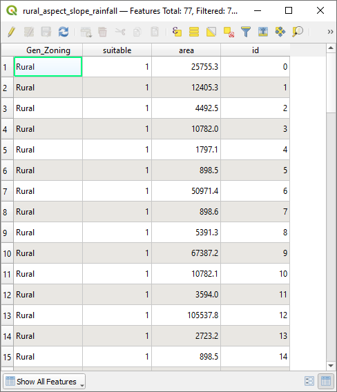

8.4. သင်ခန်းစာ - နောက်ဆက်တွဲ လေ့ကျင့်ခန်း (Lesson: Supplementary Exercise)
ဤသင်ခန်းစာတွင် GIS analysis အပြည့်အစုံတစ်ခုကို QGIS ထဲတွင် မည်သို့လုပ်ဆောင်ရမည်ကို လမ်းညွှန်ပေးမည်ဖြစ်သည်။
Note
ယခုသင်ခန်းစာကို Linfiniti Consulting (South Africa) နှင့် Siddique Motala (Cape Peninsula University of Technology) မှ ပြုစုထားပါသည်။
8.4.1. ပြဿနာဖော်ပြချက် (Problem Statement)
လုပ်ဆောင်ရမည့်တာဝန်မှာ Cape Peninsula အတွင်းနှင့်အနီးပတ်လည်တွင် ရှားပါး fynbos အပင်မျိုးစိတ်အတွက် သင့်တော်သော ရှင်သန်ပေါက်ရောက်ရာနေရာ (habitat) ဧရိယာများကို ရှာဖွေရန်ဖြစ်သည်။ ရှာဖွေရမည့်ဧရိယာ နယ်ပယ်အကျယ်အဝန်းသည် မြောက်ပိုင်းရှိ Melkbosstrand နှင့် တောင်ပိုင်းရှိ Strand အကြား Cape Town နှင့် Cape Peninsula ကိုလွှမ်းခြုံပါသည်။ ရုက္ခဗေဒပညာရှင်များသည် အပင်မျိုးစိတ်မှ ကြိုက်နှစ်သက်သော အောက်ပါအခြေအနေများကို ပံ့ပိုးပေးထားပါသည်-
၎င်းသည် အရှေ့ဘက်မျက်နှာမူသော slope များတွင် ပေါက်ရောက်သည်
လျှောစောက် (gradient) ရာခိုင်နှုန်း 15 % နှင့် 60 % အကြားရှိသော slope များတွင် ပေါက်ရောက်သည်
နှစ်စဉ်မိုးရေချိန် 1000 မီလီမီတာအထက်ရှိသော ဧရိယာများတွင် ပေါက်ရောက်သည်
၎င်းကို လူနေအိမ်များနှင့် အနည်းဆုံး 250 မီတာကွာဝေးသောနေရာတွင်သာ တွေ့နိုင်သည်
၎င်းပေါက်ရောက်သော ဧရိယာသည် အနည်းဆုံး 6000 စတုရန်းမီတာအကျယ်ဧရိယာရှိသင့်သည်
သင်သည် တက္ကသိုလ်ကျောင်းသားတစ်ယောက်အနေဖြင့် သင့်တော်မည့် မြေဧရိယာ ၄ ခုတွင် အပင်ကို ရှာဖွေရန် သဘောတူထားပြီးဖြစ်သည်။ သင်သည် အဆိုပါ သင့်တော်မည့် မြေဧရိယာ ၄ ခုကို သင်နေထိုင်ရာ University of Cape Town နှင့်အနီးဆုံး နေရာများဖြစ်စေလိုပါသည်။ သင်အနေဖြင့် မည်သည့်နေရာများတွင်ရှာဖွေမည်ကို ဆုံးဖြတ်ရန် GIS ကျွမ်းကျင်မှုများကို အသုံးပြုပါ။
8.4.2. အကြမ်းဖျင်းဖြေရှင်းချက် (Solution Outline)
ဤလေ့ကျင့်ခန်းအတွက် data များကို exercise_data/more_analysis folder ထဲတွင် တွေ့နိုင်ပါသည်။
သင့်အနေဖြင့် University of Cape Town နှင့်အနီးဆုံးဖြစ်သော သင့်တော်မည့် မြေဧရိယာ ၄ ခုကို ရှာဖွေပါတော့မည်။
ဖြေရှင်းချက်တွင် အောက်ပါတို့ပါဝင်ပါလိမ့်မည်-
အရှေ့ဘက်မျက်နှာမူသော slope များနှင့် သတ်မှတ် လျှောစောက်ရာခိုင်နှုန်း (gradient) ရှိသော slope များကို ရှာဖွေရန် DEM raster layer တစ်ခုကို ဆန်းစစ်လေ့လာခြင်း
သတ်မှတ်ထားသော မိုးရေချိန်ပမာဏရှိသော ဧရိယာများကိုရှာဖွေရန် rainfall raster layer တစ်ခုကို ဆန်းစစ်လေ့လာခြင်း
လူနေအိမ်များနှင့်အဝေးတွင်ရှိပြီး သတ်မှတ်ထားသော အရွယ်အစားရှိသည့် ဧရိယာများကို ရှာဖွေရန် zoning vector layer တစ်ခုကို ဆန်းစစ်လေ့လာခြင်း
8.4.3. လိုက်လုပ်ကြည့်ပါ - မြေပုံ ပြင်ဆင်သတ်မှတ်ခြင်း (Follow Along: Setting up the Map)
Screen ၏ ညာဘက်အောက်ခြေထောင့်ရှိ
 Current CRS ခလုတ်ကိုနှိပ်ပါ။ ပေါ်လာသော dialog ၏ CRS tab ထဲတွင် “Filter” tool ကိုသုံးပြီး “33S” ဟုရိုက်ရှာပါ။ WGS 84 / UTM zone 33S (EPSG code
Current CRS ခလုတ်ကိုနှိပ်ပါ။ ပေါ်လာသော dialog ၏ CRS tab ထဲတွင် “Filter” tool ကိုသုံးပြီး “33S” ဟုရိုက်ရှာပါ။ WGS 84 / UTM zone 33S (EPSG code 32733ဖြင့်) ကိုရွေးပါ။OK ကိုနှိပ်ပါ။

Fig. 8.3 CRS သတ်မှတ်ပေးခြင်း
 Save Project ခလုတ်ကို နှိပ်ပြီး သို့မဟုတ် menu item ကိုအသုံးပြုပြီး project ကိုသိမ်းဆည်းပါ။
Save Project ခလုတ်ကို နှိပ်ပြီး သို့မဟုတ် menu item ကိုအသုံးပြုပြီး project ကိုသိမ်းဆည်းပါ။Rasterpracဆိုသည့် ဖိုင်လမ်းကြောင်းအသစ်ကို သင့်ကွန်ပျူတာထဲတွင် ဖန်တီးထားပြီး project ကို ၎င်းဖိုင်လမ်းကြောင်းထဲတွင် သိမ်းဆည်းပါ။ Layer များကို ဖန်တီးတိုင်း ထိုဖိုင်လမ်းကြောင်းတွင် သိမ်းဆည်းပါ။ Project ကိုyour_name_fynbos.qgsအနေဖြင့် သိမ်းဆည်းပါ။
8.4.4. မြေပုံထဲသို့ Data များထည့်သွင်းခြင်း (Loading Data into the Map)
Data ကို process လုပ်ဆောင်ရန် လိုအပ်သော layer (street name များ ၊ zone များ ၊ rainfall ၊ DEM ၊ district များ) များကို မြေပုံ canvas ထဲသို့ ထည့်သွင်းရန် လိုအပ်ပါသည်။
Vector များအတွက်—
Data Source Manager Toolbar ထဲရှိ
 Open Data Source Manager ကိုနှိပ်ပြီး ပေါ်လာသော dialog ထဲတွင်
Open Data Source Manager ကိုနှိပ်ပြီး ပေါ်လာသော dialog ထဲတွင်  Vector tab ကိုဖွင့်ပါ သို့မဟုတ် menu item ကိုအသုံးပြုပါ
Vector tab ကိုဖွင့်ပါ သို့မဟုတ် menu item ကိုအသုံးပြုပါ File ကိုရွေးချယ်ထားပါ
File ကိုရွေးချယ်ထားပါVector dataset (များ) ကို ဖွင့်ရန် … ခလုတ်ကို နှိပ်ပါ
ပေါ်လာသော dialog ထဲတွင်
exercise_data/more_analysis/Streetsဖိုင်လမ်းကြောင်းကို ဖွင့်ပါStreet_Names_UTM33S.shpကိုရွေးပါOpen ကိုနှိပ်ပါ
မူရင်း Dialog ပေါ်လာမည်ဖြစ်ပြီး Vector dataset(s) ဘေးရှိ စာသား field ထဲတွင် သတ်မှတ်ပေးထားသော ဖိုင်လမ်းကြောင်းပေါ်နေမည်ဖြစ်သည်။ ဖိုင်ကို မှန်မှန်ကန်ကန် ရွေးချယ်ထားမထား ထိုထဲတွင် ကြည့်နိုင်ပါသည်။ ထို field ထဲတွင် ဖိုင်လမ်းကြောင်းကို ကိုယ်တိုင်လည်းရိုက်ထည့်ပေးနိုင်ပါသည်။
Add ကိုနှိပ်ပါ။ Vector layer ကို မြေပုံထဲသို့ ထည့်သွင်းပေးပါလိမ့်မည်။ ၎င်းအတွက် အရောင်ကို အလိုအလျှောက် သတ်မှတ်ပေးပါမည်။ အရောင်ကို နောက်ပိုင်းတွင် ပြောင်းလဲပါမည်။
Layer ကို
Streetsဟူ၍ အမည်ပြောင်းပေးပါ။Layers panel ထဲရှိ ၎င်း layer ပေါ်တွင် right-click နှိပ်ပါ
ပေါ်လာသော dialog ထဲတွင် Rename ကို click နှိပ်ပြီး layer ကို အမည်ပြောင်းပါ၊ ပြီးလျှင် Enter နှိပ်ပါ
Zoningဖိုင်လမ်းကြောင်းထဲရှိGeneralised_Zoning_Dissolve_UTM33S.shpဖိုင်ကို ထည့်သွင်းပါ။၎င်းကို
Zoningဟု အမည်ပြောင်းပါ။admin_boundaries/Western_Cape_UTM33S.shpvector layer ကိုလည်း မြေပုံထဲသို့ ထည့်သွင်းပါ။၎င်းကို
Districtsဟု အမည်ပြောင်းပါ။
Raster များအတွက်—
- Open Data Source Manager ခလုတ်ကိုနှိပ်ပြီး ပေါ်လာသော dialog ထဲတွင် Raster tab ကိုဖွင့်ပေးပါ၊ သို့မဟုတ် menu item ကိုအသုံးပြုပါ
Ensure that
File is selected- File ကိုရွေးချယ်ထားပါ
သင့်လျော်သည့်ဖိုင်နေရာသို့ ညွှန်ပေးပြီး ဖိုင်ကို ရွေးချယ်ကာ Open ကိုနှိပ်ပါ
DEM/SRTM.tifနှင့်rainfall/reprojected/rainfall.tifraster ဖိုင် ၂ ခုကို ထိုအတိုင်းပင်ဖွင့်ပါSRTM raster ကို
DEMဟုအမည်ပြောင်းပေးပြီး rainfall raster ကိုRainfall(အစစာလုံး အကြီးဖြင့်) ဟုအမည်ပြောင်းပေးပါ
{kind=link}
8.4.5. Layer အပေါ်အောက်အစီအစဉ် ပြောင်းလဲခြင်း (Changing the layer order)
Layers panel ထဲတွင် layer များကို click နှိပ်ဖိဆွဲပြီး အပေါ်အောက်ရွှေ့ကာ မြေပုံပေါ်တွင် မြင်ရသည့် order ကိုပြောင်းလဲနိုင်ပါသည်။
ယခုဆိုလျှင် data များအားလုံးကို ထည့်သွင်းပြီးဖြစ်ကာ analysis ကို စတင်နိုင်ပြီဖြစ်ပါသည်။ Clipping (တိဖြတ်ခြင်း) လုပ်ဆောင်မှုကို ဦးစွာ လုပ်ဆောင်ထားလျှင် အကောင်းဆုံးဖြစ်ပါသည်။ ထိုသို့လုပ်ဆောင်ခြင်းဖြင့် မလိုအပ်သည့်ဧရိယာများတွင် တန်ဖိုးများတွက်ချက်ရန်မလိုအပ်တော့သောကြောင့် လုပ်ဆောင်မှုစွမ်းအား မြန်ဆန်လာစေပါသည်။
8.4.6. မှန်ကန်သော ခရိုင်များကို ရှာဖွေခြင်း (Find the Correct Districts)
ရှေ့တွင်ဖော်ပြထားသော ရှာဖွေမည့်ဧရိယာအရ အောက်ဖော်ပြပါ ခရိုင်များအတွင်း ကန့်သတ်ရန် လိုအပ်ပါသည်-
BellvilleCapeGoodwoodKuils RiverMitchells PlainSimon TownWynberg
Layers panel ထဲရှိ
Districtslayer ပေါ်တွင် right-click နှိပ်ပါ။ပေါ်လာသော menu ထဲတွင် Filter… menu item ကိုရွေးပါ။ Query Builder dialog ပေါ်လာပါမည်။
သတ်မှတ်ထားသည့် district များကိုသာ ရွေးချယ်ရန် query တစ်ခုတည်ဆောက်ပါမည်-
Fields list ထဲတွင်
NAME_2field ကို click နှစ်ချက်နှိပ်ပါ၊ အောက်တွင်ရှိသည့် SQL where clause စာသား field ထဲတွင် ပေါ်လာမည်ဖြစ်သည်။SQL query ထဲတွင် ဆက်ရေးရန် IN ကိုနှိပ်ပါ။
(လက်သည်းကွင်း အဖွင့်ရေးပါ။Values list အောက်ရှိ All ခလုတ်ကိုနှိပ်ပါ။
အနည်းငယ်ကြာပြီးနောက်တွင် ရွေးချယ်ထားသော field (
NAME_2) ၏တန်ဖိုးများပါဝင်သော Values list ပေါ်လာပါလိမ့်မည်။SQL query ထဲတွင် ဆက်တွဲရေးသားရန် Values list ထဲရှိ
Bellvilleကို click နှစ်ချက်နှိပ်ပါ။ကော်မာ (,) တစ်ခုထည့်ပြီး
Capedistrict ကိုထည့်ရန် click နှစ်ချက်နှိပ်ပါ။ကျန်ရှိသော district များအတွက် အထက်ပါအဆင့်အတိုင်း ထပ်ခါထပ်ခါလုပ်ဆောင်ပါ။
)လက်သည်းကွင်း ပိတ်ပါ။

Fig. 8.4 Query builder
နောက်ဆုံး query သည် အောက်ပါအတိုင်းဖြစ်သင့်ပါသည် (Bracket ထဲရှိ district များ၏ order သည် အရေးမကြီးပါ)-:
"NAME_2" in ('Bellville', 'Cape', 'Goodwood', 'Kuils River', 'Mitchells Plain', 'Simon Town', 'Wynberg')
Note
ORoperator ကိုလည်း အသုံးပြုနိုင်ပါသည်၊ query သည် အောက်ပါပုံစံအတိုင်း ဖြစ်ပါလိမ့်မည်-:"NAME_2" = 'Bellville' OR "NAME_2" = 'Cape' OR "NAME_2" = 'Goodwood' OR "NAME_2" = 'Kuils River' OR "NAME_2" = 'Mitchells Plain' OR "NAME_2" = 'Simon Town' OR "NAME_2" = 'Wynberg'
OK နှစ်ကြိမ်နှိပ်ပါ။
အထက်ပါ စာရင်းထဲရှိ district များသာ မြေပုံပေါ်တွင် ပေါ်နေမည်ဖြစ်သည်။
8.4.7. Raster များအား တိဖြတ်ခြင်း (Clip the Rasters)
ယခုဆိုလျှင် စိတ်ဝင်စားသည့် ဧရိယာတစ်ခုရှိပြီး raster များကို အဆိုပါ ဧရိယာဖြင့် တိဖြတ် (clip) နိုင်ပါသည်။
menu item ကိုရွေးချယ်ပြီး clipping dialog ကိုဖွင့်ပါ
Input layer dropdown list ထဲတွင်
DEMlayer ကိုရွေးချယ်ပါMask layer dropdown list ထဲတွင်
Districtslayer ကိုရွေးချယ်ပါအောက်သို့ scroll လုပ်ပြီး Clipped (mask) စာသား field ထဲတွင် output တည်နေရာကိုသတ်မှတ်ရန် … ခလုတ်ကိုနှိပ်ပြီး Save to File… ကိုရွေးချယ်ပါ
Rasterpracဖိုင်လမ်းကြောင်းသို့ ညွှန်ပေးပါDEM_clipped.tifဟူသော ဖိုင်အမည်ကို ရိုက်ထည့်ပါSave လုပ်ပါ
 Open output file after running algorithm ကိုအမှန်ခြစ်ခြစ်ထားပါ
Open output file after running algorithm ကိုအမှန်ခြစ်ခြစ်ထားပါRun ကိုနှိပ်ပါ
Clipping လုပ်ဆောင်မှု ပြီးဆုံးသွားပြီးနောက်တွင် clip လုပ်ထားသော ဧရိယာကို ပြန်လည်အသုံးပြုနိုင်စေရန် Clip Raster by Mask Layer dialog ကိုဆက်ဖွင့်ထားပါ
Input layer dropdown list ထဲတွင်
Rainfallraster layer ကိုရွေးချယ်ပြီး output ကိုRainfall_clipped.tifဖိုင်အနေဖြင့် သိမ်းဆည်းပါအခြား option များကို မပြောင်းလဲပဲ ထားပြီး Run ကိုနှိပ်ပါ။
ဒုတိယ clipping လုပ်ဆောင်မှု ပြီးဆုံးသွားပြီးနောက်တွင် Clip Raster by Mask Layer dialog ကိုပိတ်ထားနိုင်ပါသည်။
မြေပုံကို သိမ်းဆည်းပါ။

Fig. 8.5 Filter လုပ်ထားသော vector ၊ clip လုပ်ထားသော raster နှင့် order ပြန်စီထားသော layer များပါဝင်သော မြေပုံမြင်ကွင်း
Raster များကို တန်းညှိခြင်း (Align the rasters)
Analysis အတွက် raster များသည် CRS အတူတူရှိရန် လိုအပ်ပြီး ၎င်းတို့ကို align ပြုလုပ်ပေးရပါမည်။
Rainfall data ၏ resolution ကို 30 မီတာ (pixel အရွယ်အစား) သို့ ဦးစွာပြောင်းလဲပါမည်-
Layers panel ထဲရှိ
Rainfall_clippedlayer ပေါ်တွင် click နှိပ်ထားပါ (၎င်းကို highlight ဖြင့်ပြနေမည်ဖြစ်သည်)Warp (Reproject) dialog ကိုဖွင့်ရန် menu item ကိုနှိပ်ပါ
Resampling method to use အောက်တွင် Bilinear (2x2 kernel) ကိုရွေးချယ်ပါ
Output file resolution in target georeferenced units တွင်
30ဟုသတ်မှတ်ပါအောက်သို့ scroll လုပ်ပြီး Reprojected အကွက်ထဲတွင် output ကို
Rainfall30.tifဖိုင်အမည်ဖြင့်rainfall/reprojectedဖိုင်လမ်းကြောင်းထဲတွင် သိမ်းဆည်းပါ။- Open output file after running algorithm ကိုအမှန်ခြစ်ခြစ်ထားပါ

Fig. 8.6 Warp (Reproject) Rainfall_clipped
ထို့နောက် DEM ကို align လုပ်ပါမည်-
Layers panel ထဲရှိ
DEM_clippedပေါ်တွင် click နှိပ်ထားပါ (၎င်းကို highlight ဖြင့်ပြနေမည်ဖြစ်သည်)Warp (Reproject) dialog ကိုဖွင့်ရန် menu item ကိုနှိပ်ပါ
Target CRS အောက်တွင် Project CRS: EPSG:32733 - WGS 84 / UTM zone 33S ကိုရွေးချယ်ပါ
Resampling method to use တွင် Bilinear (2x2 kernel) ကိုရွေးချယ်ပါ
Output file resolution in target georeferenced units တွင်
30ဟုသတ်မှတ်ပါအောက်သို့ scroll လုပ်ပြီး Georeferenced extents of output file to be created ၏ညာဘက်ရှိ ခလုတ်ကိုနှိပ်ပြီး ကိုရွေးချယ်ပါ
အောက်သို့ scroll လုပ်ပြီး Reprojected အကွက်ထဲတွင် output ကို
DEM30.tifဖိုင်အမည်ဖြင့်DEM/reprojectedဖိုင်လမ်းကြောင်းထဲတွင် သိမ်းဆည်းပါ။- Open output file after running algorithm ကိုအမှန်ခြစ်ခြစ်ထားပါ
ကောင်းမွန်စွာမြင်ရနိုင်ရန်အတွက် layer များအတွက် သင်္ကေတများကို ပြောင်းလဲပေးရန် လိုအပ်ပါသည်။
8.4.8. Vector layer များ၏ သင်္ကေတပြောင်းလဲခြင်း (Changing the symbology of vector layers)
Layers panel ထဲရှိ Streets layer ပေါ်တွင် right-click နှိပ်ပါ
ပေါ်လာသော menu မှ Properties ကိုရွေးပါ
ထပ်မံပေါ်လာသော dialog ထဲတွင် Symbology tab သို့သွားပါ
အပေါ်ရှိ Line entry တွင် click နှိပ်ပါ
စာရင်းထဲရှိ သင်္ကေတတစ်ခုကိုရွေးချယ်ပါ သို့မဟုတ် အသစ်တစ်ခုသတ်မှတ်ပါ (အရောင်၊ အလင်းဖောက်နှုန်း၊….)
OK ကိုနှိပ်ပြီး Layer Properties dialog ကိုပိတ်ပါ။ Streets layer ၏ ပုံဖော်ပြသမှု ပြောင်းလဲသွားပါလိမ့်မည်။
Zoning layer အတွက်လည်း ထိုအတိုင်းလုပ်ဆောင်ပြီး သင့်တော်သည့် အရောင်တစ်ခု ရွေးချယ်ပါ
8.4.9. Raster layer များ၏ သင်္ကေတပြောင်းလဲခြင်း (Changing the symbology of raster layers)
Raster layer သင်္ကေတသည် အနည်းငယ်ကွဲပြားပါသည်။
Rainfall30 raster layer အတွက် Properties dialog ကိုဖွင့်ပါ
Symbology tab သို့သွားပါ။ Dialog သည် vector layer များအတွက် dialog နှင့် အလွန်ကွဲပြားသည်ကို သတိထားမိပါလိမ့်မည်။
Min/Max Value Settings ကို ဖြန့်ကြည့်ပါ
Mean +/- standard deviation ကိုရွေးချယ်ထားပါ
၎င်း၏သက်ဆိုင်ရာ အကွက်ထဲရှိ တန်ဖိုးကို
2.00ထားပါContrast enhancement အတွက် Stretch to MinMax ကိုရွေးပါ
Color gradient အတွက် White to Black သို့ပြောင်းပါ
OK ကိုနှိပ်ပါ

Fig. 8.7 Raster symbology
Rainfall30raster သည် အရောင်ပြောင်းလဲသွားမည်ဖြစ်ပြီး pixel တစ်ခုချင်းစီအတွက် မတူညီသော တောက်ပမှု (brightness) တန်ဖိုးများကို တွေ့မြင်ရမည်ဖြစ်သည်။DEM30layer အတွက်လည်း ထိုအတိုင်းလုပ်ဆောင်ပြီး stretching အတွက်အသုံးပြုသော standard deviations တွင်4.00ဟုသတ်မှတ်ပါ
8.4.10. မြေပုံကို ရှင်းလင်းခြင်း (Clean up the map)
Layers panel ထဲမှ မူလ
Rainfallနှင့်DEMlayer များအပြင်Rainfall_clippedနှင့်DEM_clippedlayer များကို ဖယ်ရှားပါ-အဆိုပါ layer များပေါ်တွင် right-click နှိပ်ပြီး Remove ကိုရွေးပါ။
Note
ထိုသို့လုပ်ခြင်းသည် သင့်ကွန်ပျူတာ မှ data များကို ဖယ်ရှားလိုက်ခြင်းမဟုတ်ပဲ မြေပုံပေါ်မှသာ ဖယ်ရှားလိုက်ခြင်းဖြစ်သည်။
မြေပုံကို သိမ်းဆည်းပါ။
Layers panel ထဲရှိ vector layer များ၏ဘေးရှိ box တွင် အမှန်ခြစ်ဖြုတ်ထားခြင်းခြင်း ၎င်း vector layer များကို ဖျောက်ထားနိုင်ပါသည်။ ထိုသို့လုပ်ခြင်းဖြင့် မြေပုံထဲတွင်ပုံဖော်ပြသမှု မြန်ဆန်စေပြီး အချိန်ကုန်သက်သာစေပါသည်။
8.4.11. တောင်အရိပ် ဖန်တီးခြင်း (Create the hillshade)
Hillshade ဖန်တီးရန်အတွက် ရေးသားထားသော algorithm တစ်ခုကို အသုံးပြုရန် လိုအပ်ပါလိမ့်မည်။
Layers panel ထဲတွင်
DEM30ပေါ်တွင် click နှိပ်ထားပါ (၎င်းကို highlight ဖြင့်ပြနေမည်ဖြစ်သည်)Hillshade dialog ကိုဖွင့်ရန် menu item ကိုနှိပ်ပါ
အောက်သို့ scroll လုပ်ပြီး Hillshade အကွက်တွင် output ကို
hillshade.tifဟူသော အမည်ဖြင့်Rasterpracဖိုင်လမ်းကြောင်းထဲတွင် သိမ်းဆည်းပါ- Open output file after running algorithm ကိုအမှန်ခြစ်ခြစ်ထားပါ
Run ကိုနှိပ်ပါ
Processing ပြီးဆုံးသည်အထိ စောင့်ပါ။

Fig. 8.8 Raster analysis Hillshade
Layers panel ထဲတွင် hillshade layer အသစ်ပေါ်လာမည်ဖြစ်သည်။
Layers panel ထဲရှိ
hillshadelayer ပေါ်တွင် right-click နှိပ်ပြီး Properties dialog ကိုဖွင့်ပါTransparency tab တွင် Global Opacity ၌
20%သတ်မှတ်ပါOK ကိုနှိပ်ပါ
အလင်းဖောက်ထားသော hillshade သည် clip ပြုလုပ်ထားသော DEM ပေါ်တွင် အထင်အရှားရောက်နေသောအခါ မြင်ရသည့် effect ကိုကြည့်ပါ။ Layer များ၏ order ကို ပြောင်းလဲပေးနိုင်ပါသည်၊ သို့မဟုတ်
Rainfall30layer ကို ပိတ်ထားပြီး effect ကို ကြည့်ရှုနိုင်ပါသည်။
8.4.12. လျှောစောက် (Slope)
Slope algorithm dialog ကိုဖွင့်ရန် menu item ကိုနှိပ်ပါ
Input layer အနေဖြင့်
DEM30ကိုရွေးချယ်ပါ- Slope expressed as percent instead of degrees ကိုအမှန်ခြစ်ပါ။ Slope ကို မတူညီသော ယူနစ်များဖြင့် ဖော်ပြပေးနိုင်ပါသည် (ရာခိုင်နှုန်း သို့မဟုတ် ဒီဂရီ)။ ကျွန်ုပ်တို့၏ criteria တွင် အပင်ပေါက်ရောက်နိုင်သည့် slope သည် 15% နှင့် 60% ဖြစ်သည့်အတွက် slope data ကို percent (ရာခိုင်နှုန်း) ဖြင့်ဖော်ပြရန် လိုအပ်ပါသည်။
Output အတွက် သင့်တော်မည့် ဖိုင်အမည်နှင့် ဖိုင်လမ်းကြောင်းကို သတ်မှတ်ပါ။
- Open output file after running algorithm ကိုအမှတ်ခြစ်ခြစ်ထားပါ
Run ကိုနှိပ်ပါ

Fig. 8.9 Raster analysis Slope
Slope image ကို တွက်ချက်ပြီး မြေပုံထဲသို့ ထည့်သွင်းပြီးဖြစ်ပါသည်။ ခါတိုင်းလိုပင် ၎င်းကို grayscale ဖြင့် ပုံဖော်ပြသနေပါမည်။ အရောင်ပိုမိုစုံလင်သော သင်္ကေတတစ်ခုသို့ ပြောင်းလဲပါ-
Layer ၏ Properties dialog ကိုဖွင့်ပါ (ခါတိုင်းလိုပင် layer ကို right-click နှိပ်ပြီး)
Symbology tab သို့သွားပါ
Singleband gray ဟုဖော်ပြထားသော နေရာ (Render type dropdown menu ထဲတွင်) တွင် Singleband pseudocolor သို့ပြောင်းပါ
Min / Max Value Settings အတွက် Mean +/- standard deviation x ကိုရွေးချယ်ပြီး တန်ဖိုးကို
2.0ဟုသတ်မှတ်ပါသင့်တော်သော Color ramp တစ်ခုရွေးချယ်ပါ
Run ကိုနှိပ်ပါ
8.4.13. မိမိကိုယ်တိုင်ကြိုးစားကြည့်ပါ - မျက်နှာမူရာအရပ် (Try Yourself: Aspect)
menu ထဲမှ Aspect… ကိုရွေးချယ်ပြီး slope တွက်ချက်သည့်အတိုင်း လုပ်ဆောင်ပါ။
Project ကို အခါအားလျော်စွာ သိမ်းဆည်းပေးရန် မမေ့ပါနှင့်။
8.4.14. Raster များအား အတန်းအစားပြန်လည်ခွဲခြားခြင်း (Reclassifying rasters)
ကိုရွေးပါ
Output layer အတွက် ဖိုင်လမ်းကြောင်းအဖြစ်
Rasterpracကို သတ်မှတ်ပြီးslope15_60.tifဖိုင်အမည်ဖြင့် သိမ်းဆည်းပါOpen output file after running algorithm တွင် အမှန်ခြစ်ခြစ်ထားပါ
ဘယ်ဘက်ခြမ်းရှိ Raster bands စာရင်းထဲတွင် Layers panel ထဲရှိ raster layer များအားလုံးကို မြင်တွေ့ရပါလိမ့်မည်။ Slope layer သည် slope ဟူသောအမည်ဖြင့်ရှိနေလျှင် ၎င်းကို
slope@1အနေဖြင့် စာရင်းပြုစုထားပါလိမ့်မည်။ Slope raster ၏ band 1 ကို ညွှန်းဆိုခြင်းဖြစ်ပါသည်။Slope သည်
15နှင့်60ဒီဂရီကြားတွင် ရှိရန်လိုအပ်ပါသည်။Interface ထဲရှိ list item များနှင့် ခလုတ်များကိုအသုံးပြုပြီး အောက်ပါ expression ကိုရေးသားပါ-:
(slope@1 > 15) AND (slope@1 < 60)
Output layer field တွင် သင့်တော်မည့် ဖိုင်အမည်နှင့် ဖိုင်လမ်းကြောင်း သတ်မှတ်ပါ။
Run ကိုနှိပ်ပါ

Fig. 8.10 Raster calculator Slope
အထက်ပါနည်းလမ်းအတိုင်း မှန်ကန်သော aspect (အရှေ့ဘက်မျက်နှာမူ- 45 နှင့် 135 ဒီဂရီအကြား) ကိုရှာဖွေပါ။
အောက်ပါ expression ကိုရေးသားပါ-:
(aspect@1 > 45) AND (aspect@1 < 135)
ရလာဒ် layer ထဲတွင် အရှေ့ဘက်မျက်နှာမူသော slope များအားလုံးသည် အဖြူရောင် ဖြစ်နေမည်ဖြစ်သည် (မနက်ခင်းနေရောင်ခြည် ကျရောက်နေသည့်အတိုင်း)။
ထိုနည်းအတိုင်း မှန်ကန်သော rainfall (1000 မီလီမီတာထက် ပိုများသော) ကိုရှာဖွေပါ။ အောက်ပါ expression ကို အသုံးပြုပါ-:
Rainfall30@1 > 1000
ယခုဆိုလျှင် criteria ၃ ခုစလုံးအား raster တစ်ခုချင်းစီအဖြစ် ရရှိပြီဖြစ်ပါသည်။ မည်သည့်ဧရိယာများသည် criteria အားလုံးနှင့်ကိုက်ညီသည်ကို ရှာဖွေရန် ၎င်း raster များကို ပေါင်းစည်းရန် လိုအပ်ပါသည်။ ထိုသို့လုပ်ဆောင်ရန် raster များကို တစ်ခုနှင့်တစ်ခု မြှောက်ပေးရပါမည်။ ထိုသို့မြှောက်ပေးသောအခါ တန်ဖိုး 1 ရှိသော ထပ်နေသည့် pixel များအားလုံးသည် တန်ဖိုး 1 အဖြစ်သာ ကျန်ရှိပါလိမ့်မည် (ဆိုလိုသည်မှာ ထိုနေရာသည် criteria နှင့်ကိုက်ညီသော နေရာဖြစ်သည်)၊ သို့သော် raster ၃ ခုထဲမှ တစ်ခုခုတွင် pixel တန်ဖိုး 0 ရှိနေလျှင် (ဆိုလိုသည်မှာ ထိုနေရာသည် criteria နှင့်မကိုက်ညီသော နေရာဖြစ်သည်) ရလာဒ်တွင် 0 ဖြစ်နေပါလိမ့်မည်။ ဤနည်းအားဖြင့် ရလာဒ်တွင် သင့်တော်သည့် criteria များအားလုံးနှင့်ကိုက်ညီသော ဧရိယာများသာပါဝင်ပါလိမ့်မည်။
8.4.15. Raster များပေါင်းစည်းခြင်း (Combining rasters)
Raster Calculator ကိုဖွင့်ပါ ()
အောက်ပါ expression ကိုရေးသားပါ (layer များအတွက် သင့်တော်သော အမည်များဖြင့်)-:
[aspect45_135] * [slope15_60] * [rainfall_1000]
Output ဖိုင်လမ်းကြောင်းကို
Rasterpracအဖြစ်သတ်မှတ်ပါOutput raster ကို
aspect_slope_rainfall.tifဖိုင်အမည်ပေးပါ- Open output file after running algorithm ကိုအမှန်ခြစ်ခြစ်ထားပါ
Run ကိုနှိပ်ပါ
Raster အသစ်သည် Criteria ၃ ခုစလုံးနှင့်ကိုက်ညီသော ဧရိယာများကိုပြသပေးမည်ဖြစ်ပါသည်။
Project ကိုသိမ်းဆည်းပါ။

Fig. 8.11 Criteria ၃ ခုစလုံးနှင့်ကိုက်ညီသော မြေပုံမြင်ကွင်း
နောက်ထပ် ကိုက်ညီရမည့် criterion တစ်ခုမှာ ဧရိယာသည် မြို့ပြလူနေဧရိယာများမှ 250 မီတာ ကွာဝေးရပါမည်။ တွက်ချက်မည့်ဧရိယာသည် ကျေးလက်ဒေသဧရိယာ (rural areas) များအတွင်း ရှိရမည်ဖြစ်ပြီး ဧရိယာ၏အစွန်းမှ 250 မီတာ သို့မဟုတ် ပိုများသော အကွာအဝေးတွင်ဖြစ်ရပါမည်။ ထို့ကြောင့် ကျေးလက်ဒေသဧရိယာများကို ဦးစွာ ရှာဖွေရန် လိုအပ်ပါသည်။
8.4.16. ကျေးလက်ဒေသဧရိယာများ ရှာဖွေခြင်း (Finding rural areas)
Layers panel ထဲရှိ layer များအားလုံးကို ဖျောက်ထားပါ
Zoningvector layer ကို ဖွင့်ထားပါ၎င်း layer ပေါ်တွင် right-click နှိပ်ပြီး Attribute Table dialog ကိုဖွင့်ပါ။ ဤနေရာတွင် မြေနေရာကို နည်းလမ်းအမျိုးမျိုးဖြင့် zone ခွဲထားပါသည်။ ကျေးလက်ဒေသဧရိယာများကို သီးသန့်ခွဲထုတ်လိုပါသည်။ Attribute table ကိုပိတ်လိုက်ပါ။
Zoninglayer ပေါ်တွင် right-click နှိပ်ပြီး Query Builder dialog ကိုဖွင့်ရန် Filter… ကိုရွေးချယ်ပါအောက်ပါ query ကိုရေးသားပါ-:
"Gen_Zoning" = 'Rural'
အခက်အခဲကြုံနေရလျှင် အစောပိုင်းကဖော်ပြခဲ့သော ညွှန်ကြားချက်များကို ကြည့်ပါ။
OK ကိုနှိပ်ပြီး Query Builder dialog ကိုပိတ်ပါ။ Query သည် feature တစ်ခုသာ ပြန်ထုတ်ပေးသင့်ပါသည်။

Query builder Zoning
Zoning layer မှ rural polygon များကို မြင်တွေ့ရပါမည်။ ၎င်းတို့ကို သိမ်းဆည်းရန် လိုအပ်ပါမည်။
Zoningတွင် right-click နှိပ်ပြီး ကိုရွေးချယ်ပါ။Layer ကို
Rasterpracဖိုင်လမ်းကြောင်းအောက်တွင် သိမ်းဆည်းပါOutput ဖိုင်ကို
rural.shpဟုအမည်ပေးပါOK ကိုနှိပ်ပါ
Project ကို သိမ်းဆည်းပါ
Rural ဧရိယာများ၏အစွန်းမှ 250m အတွင်းရှိသော ဧရိယာများကို ချန်လှပ်ထားရန် လိုအပ်ပါသည်။ ထိုသို့လုပ်ဆောင်ရန် အောက်တွင်ရှင်းပြထားသည့်အတိုင်း အတွင်းဘက် buffer (negative buffer) တစ်ခု ဖန်တီးပေးပါမည်။
8.4.17. အတွင်းဘက် buffer တစ်ခုဖန်တီးခြင်း (Creating a negative buffer)
ကိုနှိပ်ပါ
ပေါ်လာသော dialog ထဲတွင် input vector layer အနေဖြင့်
rurallayer ကိုရွေးပါ (Selected features only ကိုအမှန်ခြစ်ဖြုတ်ထားသင့်ပါသည်)Distance တွင်
-250ဟုသတ်မှတ်ပါ။ အနုတ်တန်ဖိုးသည် buffer ကိုအတွင်းဘက်သို့ ဖန်တီးပေးမည်ဖြစ်သည်။ ယူနစ်များကို မီတာ ရွေးချယ်ထားပါ။- Dissolve result ကို အမှန်ခြစ်ထားပါ
Buffered ထဲတွင် output ဖိုင်အား
rural_buffer.shpဖိုင်အမည်ပေးပြီးRasterpracဖိုင်လမ်းကြောင်းတွင် သိမ်းဆည်းပါSave ကိုနှိပ်ပါ
Run ကိုနှိပ်ပြီး processing ပြီးဆုံးသည်အထိစောင့်ပါ
Buffer dialog ကိုပိတ်ပါ
Buffer သည် မှန်မှန်ကန်ကန်အလုပ်ဖြစ်/မဖြစ်ဆိုသည်ကို
rurallayer နှင့်rural_bufferlayer နှစ်ခုခြားနားချက်ကို ယှဉ်ကြည့်ပါ။ ခြားနားချက်ကို မြင်တွေ့ရရန် layer order ကို ပြောင်းလဲပေးရန် လိုကောင်းလိုပါလိမ့်မည်။rurallayer ကို ဖယ်ရှားလိုက်ပါProject ကိုသိမ်းဆည်းပါ

Fig. 8.12 Rural buffer ဖြင့်မြေပုံမြင်ကွင်း
ယခုဆိုလျှင် rural_buffer vector layer ကို aspect_slope_rainfall raster ဖြင့်ပေါင်းစည်းရန် လိုအပ်ပါသည်။ ၎င်းတို့ကိုပေါင်းစည်းရန် layer တစ်ခုခု၏ data format ကို ပြောင်းလဲရန် လိုအပ်ပါမည်။ ဤတွင် raster ကို vector အဖြစ်သို့ပြောင်းလဲပါမည်၊ အဘယ်ကြောင့်ဆိုသော် vector layer များသည် ဧရိယာများတွက်ချက်ရာတွင် ပိုအဆင်ပြေသောကြောင့်ဖြစ်သည်။
8.4.18. Raster အား Vector အဖြစ်သို့ပြောင်းလဲခြင်း (Vectorizing the raster)
ကိုနှိပ်ပါ
Input layer အဖြစ်
aspect_slope_rainfallraster ကိုရွေးပါName of the field to create တွင်
suitableဟုသတ်မှတ်ပါ (default field အမည်သည်DN- ဒစ်ဂျစ်တယ်ဂဏန်းဒေတာ ဖြစ်ပါသည်)Output ကို သိမ်းဆည်းပါ။ Vectorized အောက်တွင် Save file as ကိုရွေးပါ။ ဖိုင်လမ်းကြောင်းကို
Rasterpracတွင်သတ်မှတ်ပြီး ဖိုင်အမည်ကိုaspect_slope_rainfall_all.shpဟုအမည်ပေးပါ။- Open output file after running algorithm ကိုအမှန်ခြစ်ခြစ်ထားပါ
Run ကိုနှိပ်ပါ
Processing ပြီးဆုံးသွားသောအခါ dialog ကိုပိတ်ပါ။

Fig. 8.13 Raster မှ Vector သို့
Raster ၏ဧရိယာများအားလုံးကို vector အဖြစ်သို့ ပြောင်းလဲပြီးဖြစ်ပါသည်၊ ထို့ကြောင့် suitable field ထဲတွင် တန်ဖိုး 1 ရှိသော ဧရိယာများကိုသာ ရွေးချယ်ရန် လိုအပ်ပါသည်။
Vector layer အသစ်အတွက် Query Builder dialog ကိုဖွင့်ပါ (right-click - Filter…)
အောက်ပါ query ကိုရေးပါ-:
"suitable" = 1
OK ကိုနှိပ်ပါ
Query ပြီးဆုံးကြောင်း သေချာပါက (criteria ၃ ခုစလုံးနှင့်ကိုက်ညီသော၊ ဆိုလိုသည်မှာ တန်ဖိုး
1ရှိသော၊ ဧရိယာများကိုသာ မြင်နိုင်လျှင်) layer ကို right-click နှိပ်ပြီး ကိုအသုံးပြု၍ ရလာဒ်များမှ vector ဖိုင်အသစ်တစ်ခု ဖန်တီးပါဖိုင်ကို
Rasterpracဖိုင်လမ်းကြောင်းတွင် သိမ်းဆည်းပါဖိုင်ကို
aspect_slope_rainfall_1.shpဟုအမည်ပေးပါမြေပုံမှ
aspect_slope_rainfall_alllayer ကိုဖယ်ရှားပါProject ကိုသိမ်းဆည်းပါ
Raster တစ်ခုကို vector အဖြစ်သို့ပြောင်းရန် algorithm တစ်ခုကိုအသုံးပြုသောအခါ တစ်ခါတရံတွင် algorithm သည် “Invalid geometries” (“ဆီလျော်မှုမရှိသောဂျီဩမေတြီများ”) ဟူ၍ ထုတ်ပေးပါသည်၊ ဆိုလိုသည်မှာ နောက်ပိုင်း ဆန်းစစ်လေ့လာခြင်းတွင် အခက်အခဲဖြစ်စေနိုင်သော polygon အလွတ်များပါနေခြင်း၊ သို့မဟုတ် အမှားများပါဝင်သော polygon များရှိနေခြင်းတို့ဖြစ်သည်။ ထို့ကြောင့် “Fix Geometry” tool ကိုအသုံးပြုရန် လိုအပ်ပါသည်။
8.4.19. ဂျီဩမေတြီမှန်ကန်အောင်ပြုပြင်ခြင်း (Fixing geometry)
Processing Toolbox ထဲတွင် “Fix geometries” ဟုရိုက်ရှာပြီး ၎င်းကို Execute… လုပ်ပါ။
Input layer အတွက်
aspect_slope_rainfall_1ကိုရွေးပါFixed geometries အောက်တွင် Save file as ကိုရွေးချယ်ပြီး output ကို
fixed_aspect_slope_rainfall.shpဟူသောဖိုင်အမည်ဖြင့်Rasterpracဖိုင်လမ်းကြောင်းတွင် သိမ်းဆည်းပါ။- Open output file after running algorithm ကိုအမှန်ခြစ်ခြစ်ထားပါ
Run ကိုနှိပ်ပါ
Processing ပြီးဆုံးသွားသောအခါ dialog ကိုပိတ်ပါ
ယခုဆိုလျှင် raster ကို vector အဖြစ်သို့ပြောင်းလဲပြီး ရလာဒ် ဂျီဩမေတြီကို မှန်ကန်အောင်ပြုပြင်ပြီးဖြစ်ပါသည်။ fixed_aspect_slope_rainfall layer နှင့် rural_buffer layer နှစ်ခု ထိဖြတ်ခြင်း (intersection) ကိုရှာဖွေခြင်းဖြင့် Aspect ၊ slope နှင့် rainfall criteria များကို လူနေအိမ်များမှအကွာအဝေး (distance from human settlement) criteria ဖြင့် ပေါင်းစည်းနိုင်ပြီဖြစ်ပါသည်။
8.4.20. Vector များထိဖြတ်ခြင်းကို ဆုံးဖြတ်ခြင်း (Determining the Intersection of vectors)
ကိုနှိပ်ပါ
ပေါ်လာသော dialog ထဲတွင် Input layer အနေဖြင့်
rural_bufferlayer ကိုရွေးပါOverlay layer အတွက်
fixed_aspect_slope_rainfalllayer ကိုရွေးပါIntersection တွင် output ဖိုင်အား
Rasterpracဖိုင်လမ်းကြောင်း၌ သိမ်းဆည်းပါOutput ဖိုင်အား
rural_aspect_slope_rainfall.shpဟုအမည်ပေးပါSave ကိုနှိပ်ပါ
Run ကိုနှိပ်ပြီး processing ပြီးဆုံးသည်အထိစောင့်ပါ
Intersection dialog ကိုပိတ်ပါ
Intersection သည် မှန်မှန်ကန်ကန်အလုပ်ဖြစ်/မဖြစ်ကို ထပ်နေသည့်ဧရိယာများသာ ကျန်ရှိနေခြင်းကို ကြည့်၍ စစ်ဆေးပါ။
Project ကိုသိမ်းဆည်းပါ
သတ်မှတ်စာရင်းထဲရှိ နောက်ထပ် criteria မှာ ဧရိယာသည် 6000 စတုရန်းမီတာထက် ကြီးရမည်ဖြစ်သည်။ ဤ project အတွက် သင့်တော်မည့်အရွယ်အစားရှိသည့် ဧရိယာများကို ဖော်ထုတ်ရန် polygon ဧရိယာများကို တွက်ချက်ပါမည်။
8.4.21. Polygon တစ်ခုချင်းစီအတွက် ဧရိယာတွက်ချက်ခြင်း (Calculating the area for each polygon)
Vector layer အသစ်တွင် right-click နှိပ်ပါ
Open attribute table ကိုရွေးပါ
ဇယား၏ဘယ်ဘက်အပေါ်ရှိ
 Toggle editing ခလုတ်ကိုနှိပ်ပါ၊ သို့မဟုတ် Ctrl+e ကိုနှိပ်ပါ
Toggle editing ခလုတ်ကိုနှိပ်ပါ၊ သို့မဟုတ် Ctrl+e ကိုနှိပ်ပါဇယား၏ အပေါ်တစ်လျှောက် toolbar ထဲရှိ
 Open field calculator ခလုတ်ကိုနှိပ်ပါ၊ သို့မဟုတ် Ctrl+i ကိုနှိပ်ပါ
Open field calculator ခလုတ်ကိုနှိပ်ပါ၊ သို့မဟုတ် Ctrl+i ကိုနှိပ်ပါပေါ်လာသော dialog ထဲတွင်
Create new field ကိုအမှန်ခြစ်ခြစ်ထားပြီး Output field name တွင် areaဟုသတ်မှတ်ပါ။ Output field အမျိုးအစားသည် decimal number (real) ဖြစ်သင့်ပါသည်။ Precision တွင်1(ဒဿမတစ်နေရာ) ဟု သတ်မှတ်ပါ။Expression ထဲတွင် အောက်ပါကို ရိုက်ထည့်ပါ-:
$area
ဆိုလိုသည်မှာ field calculator သည် vector layer ထဲရှိ polygon တစ်ခုချင်းစီ၏ ဧရိယာတွက်ချက်ပေးမည်ဖြစ်ပြီး integer column အသစ်တစ်ခု (
areaဟုခေါ်သော) ထဲတွင် တွက်ချက်ထားသောတန်ဖိုးကို ထည့်သွင်းပေးမည်ဖြစ်သည်။
Fig. 8.14 Field Calculator
OK ကိုနှိပ်ပါ
idဟုခေါ်သော နောက်ထပ် field အသစ်ကိုလည်း ထည့်သွင်းပါ။ Field calculator expression ထဲတွင် အောက်ပါကို ရိုက်ထည့်ပါ-:$id
ထိုသို့လုပ်ခြင်းသည် polygon တစ်ခုချင်းစီတွင် သီးခြား ID တစ်ခုစီရှိနေစေမည်ဖြစ်သည်။
- Toggle editing ကိုထပ်မံ၍ နှိပ်ပါ၊ edit လုပ်ထားသည်များကို သိမ်းဆည်းမည်လား မေးမြန်းလာပါက သိမ်းဆည်းပေးပါ။
 Fig. 8.15 Area နှင့် id column များပါဝင်သော Attribute table
8.4.22. သတ်မှတ်အရွယ်အစားရှိသည့် ဧရိယာများကို ရွေးချယ်ခြင်း (Selecting areas of a given size)
ယခုဆိုလျှင် ဧရိယာများကို ရရှိပြီးဖြစ်ပါသည်-
6000စတုရန်းမီတာထက်ကြီးသော polygon များကိုသာ ရွေးချယ်ရန် query တစ်ခုတည်ဆောက်ပါ (ခါတိုင်းလိုပင်)။ Query သည်-:"area" > 6000
ရွေးချယ်ထားသည်များကို
suitable_areas.shpဟူသောအမည်ဖြင့် vector layer အသစ်တစ်ခုအဖြစ်Rasterpracဖိုင်လမ်းကြောင်းတွင် သိမ်းဆည်းပါ။
ယခုဆိုလျှင် ရှားပါး fynbos အပင်အတွက် ပေါက်ရောက်နိုင်သည့် criteria များအားလုံးနှင့်ကိုက်ညီသော သင့်တော်သည့်ဧရိယာများ ရရှိပြီဖြစ်ပါသည်။ ထိုဧရိယာများထဲမှ University of Cape Town နှင့်အနီးဆုံးဖြစ်သော ဧရိယာ ၄ ခုကို ရွေးချယ်မည်ဖြစ်ပါသည်။
8.4.23. University of Cape Town ကို ဂျီဩမေတြီရေးဆွဲခြင်း (Digitize the University of Cape Town)
Rasterpracဖိုင်လမ်းကြောင်းထဲတွင် vector layer အသစ်တစ်ခုဖန်တီးပါ၊ သို့သော် ဤတစ်ကြိမ်တွင် Geometry type အနေဖြင့် Point ကိုအသုံးပြုပြီး ၎င်းကိုuniversity.shpဟု အမည်ပေးပါ။၎င်း၏ CRS ကိုမှန်ကန်အောင် ပြုလုပ်ပါ (
Project CRS:EPSG:32733 - WGS 84 / UTM zone 33S)OK နှိပ်ပြီး layer အသစ်ဖန်တီးခြင်းကို အဆုံးသတ်ပါ။
universitylayer အသစ်နှင့်Streetslayer မှလွဲ၍ ကျန် layer များအားလုံးကို ဖျောက်ထားပါ။နောက်ခံမြေပုံ (OSM) တစ်ခုထည့်သွင်းပါ-
Browser panel မှတဆင့် သို့သွားပါ
OpenStreetMapအား Layers panel ၏အောက်ခြေသို့ ဖိဆွဲ၍ရွှေ့ပါ
Internet browser အသုံးပြုပြီး University of Cape Town ၏တည်နေရာကို ရှာဖွေပါ။ Cape Town ၏ ထူးခြားသောပထဝီဝင်အနေအထားအရ University သည် ထင်သာမြင်သာရှိသော တည်နေရာတွင်တည်ရှိပါသည်။ QGIS သို့ပြန်မသွားခင်တွင် University ၏တည်နေရာနှင့် အနီးအနားရှိနေရာများကို မှတ်သားထားပါ။
Streetslayer ကို click လုပ်ထားပြီးuniversitylayer သည် Layers panel ထဲတွင် highlight ဖြစ်နေအောင်လုပ်ထားပါmenu item တွင် Digitizing ကိုရွေးချယ်ထားပါ။ ခဲတံပုံဖြင့် toolbar icon တစ်ခု (
Toggle editing) ကိုမြင်တွေ့ရပါမည်။ ၎င်းသည် Toggle Editing ခလုတ်ဖြစ်ပါသည်။edit mode ဖွင့်ရန် Toggle editing ခလုတ်ကိုနှိပ်ပါ။ ထိုသို့လုပ်ခြင်းဖြင့် vector layer တစ်ခုကို edit လုပ်နိုင်မည်ဖြစ်သည်။
- Toggle editing ခလုတ်၏ အနီးအနားတွင်ရှိသော
 Add Point Feature ခလုတ်ကိုနှိပ်ပါ
Add Point Feature ခလုတ်ကိုနှိပ်ပါ Add feature tool ပွင့်လာပါက University of Cape Town ၏တည်နေရာကို အကောင်းဆုံးခန့်မှန်းထားသောနေရာတွင် left-click နှိပ်ပါ
idထည့်သွင်းရန် မေးမြန်းလာပါက ကိန်းပြည့် (integer) တစ်ခုထည့်ပေးပါOK ကိုနှိပ်ပါ
 Save Layer Edits ခလုတ်ကိုနှိပ်ပါ
Save Layer Edits ခလုတ်ကိုနှိပ်ပါEdit ပြုလုပ်နေသည်ကို ရပ်တန့်ရန် Toggle editing ခလုတ်ကိုနှိပ်ပါ
Project ကိုသိမ်းဆည်းပါ
8.4.24. University of Cape Town နှင့်အနီးဆုံး နေရာများကိုရှာဖွေခြင်း (Find the locations that are closest to the University of Cape Town)
Processing Toolbox ထဲတွင် Join Attributes by Nearest algorithm () ကိုဖွင့်ပါ
Input layer သည်
universityဖြစ်သင့်ပြီး Input layer 2 သည်suitable_areasဖြစ်သင့်ပါသည်။သင့်တော်သော output ဖိုင်အမည်နှင့် ဖိုင်လမ်းကြောင်းတစ်ခုသတ်မှတ်ပါ (Joined layer)
Maximum nearest neighbors တွင်
4ဟုသတ်မှတ်ပါ- Open output file after running algorithm ကိုအမှန်ခြစ်ထားပါ
ကျန်ရှိသော parameter များတွင် default တန်ဖိုးများအတိုင်း ထားပါ
Run ကိုနှိပ်ပါ
ရလာဒ် point layer တွင် feature ၄ ခုပါဝင်ပါလိမ့်မည် - ၎င်းတို့တွင် University ၏တည်နေရာနှင့် အချက်အလက်များအားလုံးပါရှိသည့်အပြင် အနီးအနားရှိ သင့်လျော်သည့် ဧရိယာများ၏ အချက်အလက်များ (id အပါအဝင်) နှင့် ထို university တည်နေရာသို့ အကွာအဝေး အားလုံးပါရှိပါလိမ့်မည်။
Join (ချိတ်ဆက်) ထားသော ရလာဒ်၏ attribute ဇယားကိုဖွင့်ပါ
အနီးဆုံးဖြစ်သည့် သင့်တော်သောဧရိယာ ၄ ခု၏
idကိုမှတ်သားထားပြီး attribute ဇယားကိုပိတ်ပါsuitable_areaslayer ၏ attribute ဇယားကိုဖွင့်ပါUniversity နှင့်အနီးဆုံးဖြစ်သော သင့်တော်သည့်ဧရိယာ ၄ ခုကို ရွေးချယ်ရန် query တစ်ခုတည်ဆောက်ပါ (
idfield ကိုအသုံးပြု၍ရွေးချယ်ခြင်း)
ဤအရာသည် သုတေသနမေးခွန်း၏ နောက်ဆုံးအဖြေဖြစ်ပါသည်။
နောက်ဆုံးရလာဒ်ကိုတင်ပြရန်အတွက် label အပြည့်အစုံထည့်သွင်းထားသော မြေပုံအပြင်အဆင် (layout) တစ်ခုဖန်တီးပါ၊ ထို layout ထဲတွင် DEM သို့မဟုတ် Slope raster ကဲ့သို့သော အောက်ခံတစ်ခုပေါ်တွင် အလင်းဖောက်နှုန်း ပမာဏတစ်ခုသတ်မှတ်ထားသည့် (semi-transparent) hillshade layer ထည့်သွင်းပါ၊ ထို့အပြင် University နှင့် suitable_areas layer ကိုထည့်သွင်းပေးကာ university နှင့်အနီးဆုံးဖြစ်သည့် သင့်တော်သော ဧရိယာ ၄ ခုကို highlight လုပ်ပေးပါ။ Output မြေပုံကို ဖန်တီးရာတွင် မြေပုံရေးဆွဲခြင်းအတွက် အကောင်းဆုံးအလေ့အထများ အားလုံးအတိုင်း လိုက်နာဆောင်ရွက်ပါ။